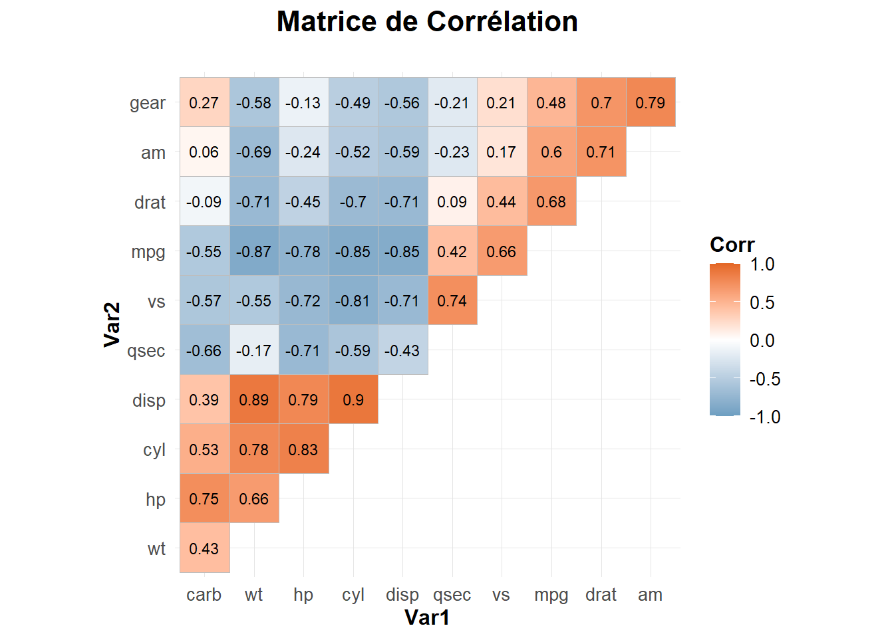
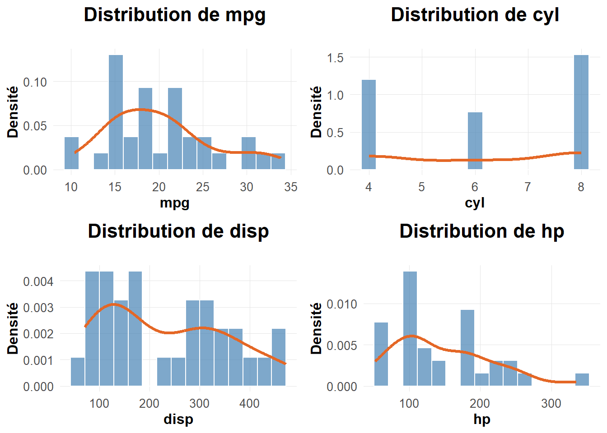
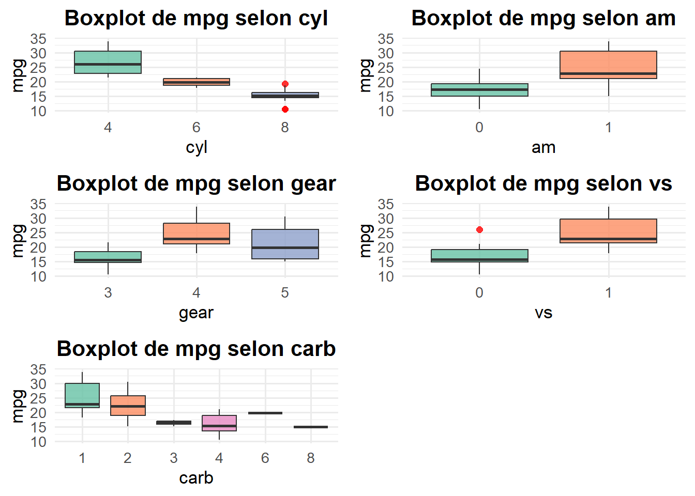
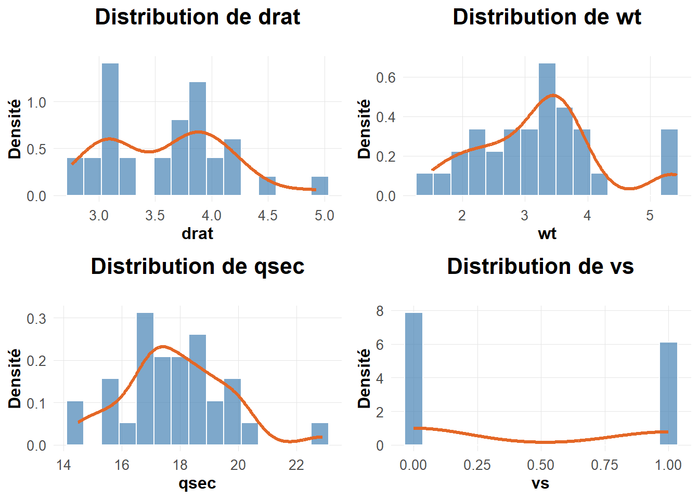
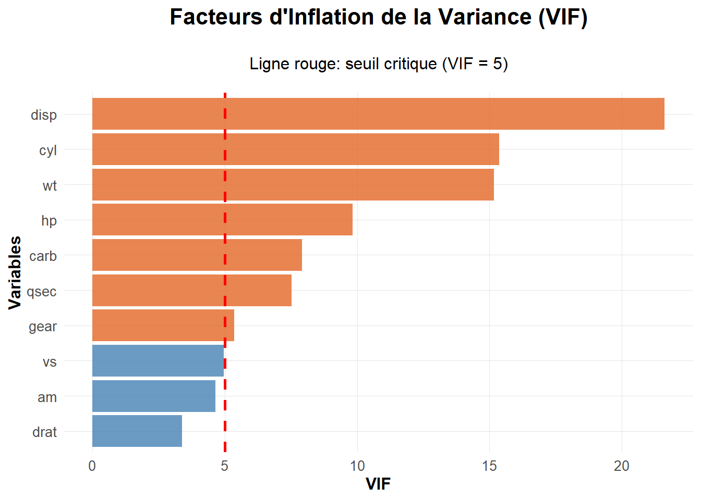
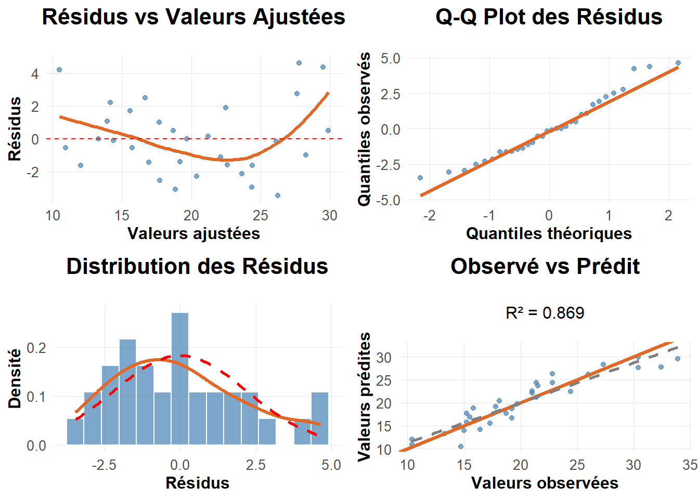
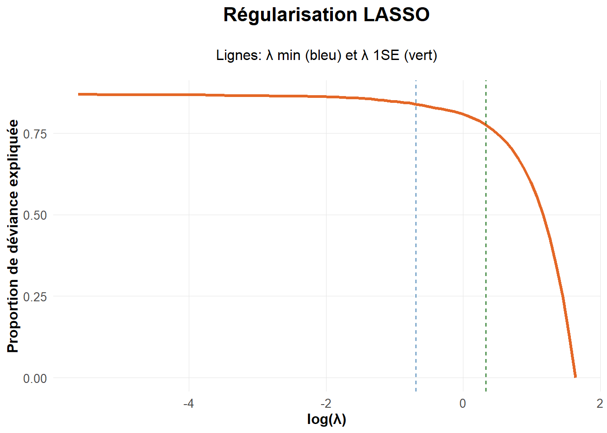
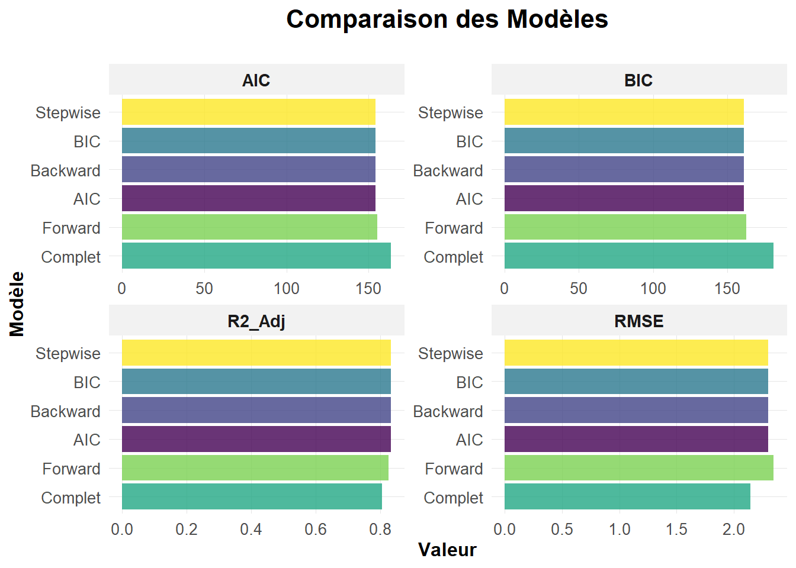
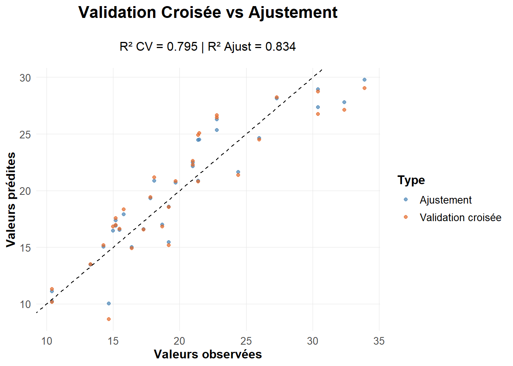
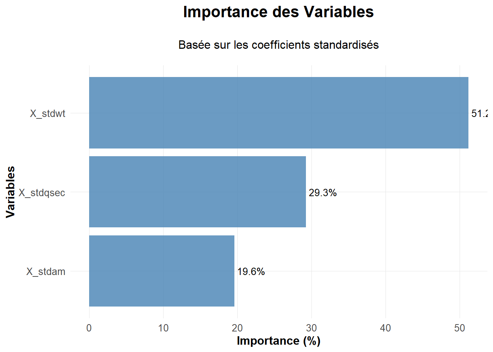

Code
rm(list = ls())rm(list = ls())# Configuration initiale
set.seed(42)
options(scipen = 999)
# Gestion des packages avec pacman
if (!require(pacman, quietly = TRUE)) {
install.packages("pacman", repos = "https://cran.rstudio.com/")
library(pacman)
}
# Chargement de tous les packages nécessaires
p_load(tidyverse, ggthemes, car, glmnet, MASS, corrplot,
gridExtra, broom, performance, GGally, viridis,
plotly, kableExtra)
# Définir theme_elegant (version optimisée)
theme_elegant <- function() {
theme_minimal() +
theme(
plot.title = element_text(size = 16, face = "bold", hjust = 0.5,
margin = margin(b = 20)),
plot.subtitle = element_text(size = 12, hjust = 0.5,
margin = margin(b = 15)),
axis.title = element_text(size = 12, face = "bold"),
axis.text = element_text(size = 10, color = "grey30"),
legend.title = element_text(size = 12, face = "bold"),
legend.text = element_text(size = 10),
panel.grid.minor = element_blank(),
panel.grid.major = element_line(color = "grey90", linewidth = 0.3),
plot.background = element_rect(fill = "white", color = NA),
panel.background = element_rect(fill = "white", color = NA),
strip.text = element_text(size = 11, face = "bold"),
strip.background = element_rect(fill = "grey95", color = NA)
)
}# 1. Chargement et préparation des données
data(mtcars)
donnees <- mtcars
donnees$Y <- donnees$mpg
cat("Dataset:", nrow(donnees), "observations,", ncol(donnees)-1, "variables\n")Dataset: 32 observations, 11 variablescat("Valeurs manquantes:", sum(is.na(donnees)), "\n")Valeurs manquantes: 0 mtcarsLe jeu de données mtcars est un dataset classique intégré à R, tiré de la publication Motor Trend US magazine (1974). Il fournit des caractéristiques techniques de 32 modèles de voitures (principalement américaines) des années 1970.
Y| Variable | Description | Type |
|---|---|---|
mpg |
Miles per gallon : consommation de carburant (miles parcourus par gallon) | Quantitative continue (cible Y) |
cyl |
Nombre de cylindres | Quantitative discrète |
disp |
Cylindrée (en pouces cubes) | Quantitative continue |
hp |
Puissance du moteur (en chevaux-vapeur) | Quantitative continue |
drat |
Rapport de pont (rear axle ratio) | Quantitative continue |
wt |
Poids de la voiture (en milliers de livres) | Quantitative continue |
qsec |
Temps pour parcourir 1/4 mile (en secondes) | Quantitative continue |
vs |
Type de moteur : 0 = moteur en V, 1 = moteur en ligne | Binaire (catégorielle) |
am |
Transmission : 0 = automatique, 1 = manuelle | Binaire (catégorielle) |
gear |
Nombre de vitesses du modèle | Quantitative discrète |
carb |
Nombre de carburateurs | Quantitative discrète |
Y |
Variable cible : copie de mpg pour la modélisation |
Identique à mpg |
mpg a été dupliquée en Y pour faciliter les analyses de type régression.vs, am) sont codées en facteurs binaires bien que numériques.gear, carb, cyl sont numériques mais peuvent être traitées comme catégorielles ordonnées selon le contexte de l’analyse.# Matrice de corrélation (sur les variables numériques uniquement)
vars_numeric <- select_if(donnees, is.numeric)
# On exclut 'Y' pour éviter la redondance
vars_cor <- vars_numeric[, !names(vars_numeric) %in% "Y"]
# Génération de la matrice de corrélation
library(ggcorrplot)
p1 <- ggcorrplot::ggcorrplot(
cor(vars_cor),
hc.order = TRUE,
type = "upper",
lab = TRUE,
lab_size = 3,
colors = c("#6D9EC1", "white", "#E46726")
) +
labs(title = "Matrice de Corrélation") +
theme_elegant()
# Affichage du graphique
print(p1)
# Distribution des variables numériques avec courbe de densité
plots_dist <- lapply(names(vars_numeric), function(x) {
ggplot(donnees, aes_string(x = x)) +
geom_histogram(aes(y = after_stat(density)), bins = 15,
fill = "steelblue", alpha = 0.7, color = "white") +
geom_density(color = "#E46726", size = 1.2) +
labs(title = paste("Distribution de", x), x = x, y = "Densité") +
theme_elegant()
})Warning: `aes_string()` was deprecated in ggplot2 3.0.0.
ℹ Please use tidy evaluation idioms with `aes()`.
ℹ See also `vignette("ggplot2-in-packages")` for more information.Warning: Using `size` aesthetic for lines was deprecated in ggplot2 3.4.0.
ℹ Please use `linewidth` instead.grid.arrange(grobs = plots_dist[1:4], ncol = 2)
Les histogrammes avec courbe de densité permettent de visualiser la répartition des valeurs de chaque variable numérique. Voici les principales observations :
mpg (miles per gallon)
La distribution est légèrement asymétrique à gauche. La majorité des voitures ont une consommation comprise entre 15 et 25 mpg. Peu de modèles sont très économes (>30 mpg). Cette distribution reste proche de la normale, ce qui est favorable pour une régression linéaire, mais une vérification plus poussée pourrait être utile.
cyl (nombre de cylindres)
Variable clairement discrète avec trois valeurs dominantes : 4, 6 et 8. Cela montre que cyl doit être considérée comme une variable catégorielle, et non comme une variable continue.
disp (cylindrée)
Distribution asymétrique à droite. Les valeurs sont concentrées entre 100 et 300, avec quelques cylindrées très élevées. Cette asymétrie pourrait justifier une transformation (logarithmique par exemple) avant modélisation.
hp (puissance du moteur)
Là encore, une forte asymétrie à droite est visible. La plupart des voitures ont une puissance entre 80 et 180 chevaux, mais quelques valeurs extrêmes sont présentes. Une transformation peut aider à stabiliser la variance si cette variable est utilisée comme prédicteur.
disp et hp peuvent affecter les performances des modèles linéaires. Des transformations peuvent être envisagées pour améliorer les ajustements.cyl doivent être traitées comme catégorielles. Cela évite d’introduire une relation linéaire artificielle avec la variable cible.Ces constats orientent la préparation des données avant toute modélisation statistique ou machine learning.
# Liste des variables catégorielles
vars_cat <- c("cyl", "am", "gear", "vs", "carb")
# Génération des boxplots sans modifier le jeu de données
library(ggplot2)
plots_box <- lapply(vars_cat, function(var) {
ggplot(donnees, aes(x = factor(.data[[var]]), y = mpg, fill = factor(.data[[var]]))) +
geom_boxplot(alpha = 0.8, outlier.color = "red", outlier.size = 2) +
scale_fill_brewer(palette = "Set2") +
labs(title = paste("Boxplot de mpg selon", var),
x = var, y = "mpg") +
theme_minimal(base_size = 13) +
theme(legend.position = "none",
plot.title = element_text(hjust = 0.5, face = "bold"))
})
library(gridExtra)
do.call(grid.arrange, c(plots_box, ncol = 2))
Les boxplots permettent de visualiser l’impact des variables catégorielles sur la consommation de carburant (mpg). Voici les principaux enseignements :
am = 1) sont en moyenne plus économes que celles à transmission automatique.mpg avec le nombre de vitesses, mais les groupes sont déséquilibrés.vs = 1) sont associés à une meilleure consommation que les moteurs en V.mpg, forte dispersion selon les catégories. Les groupes avec 4, 6 ou 8 carburateurs sont très peu représentés.Les variables cyl, am et vs présentent des différences nettes de consommation entre groupes. Elles semblent pertinentes pour une modélisation explicative. D’autres variables comme gear et carb devront être utilisées avec prudence, en tenant compte de la taille des sous-groupes.
grid.arrange(grobs = plots_dist[5:8], ncol = 2)
Les graphiques de densité permettent de mieux comprendre la répartition de certaines variables explicatives du dataset mtcars.
drat (rear axle ratio)
La variable présente une distribution assez étalée avec deux pics (vers 3.1 et 3.9). Cela suggère une certaine hétérogénéité technique dans les rapports de pont des véhicules. La distribution est peu asymétrique, ce qui est favorable pour une modélisation sans transformation.
wt (poids de la voiture, en milliers de livres)
La distribution est asymétrique à droite avec une concentration entre 2.5 et 3.5. Ce type de répartition est courant pour des données physiques comme le poids. Une transformation logarithmique pourrait être envisagée si le modèle est sensible à l’échelle.
qsec (temps pour parcourir 1/4 de mile en secondes)
Distribution relativement symétrique avec un pic autour de 17 secondes. Cette variable semble adaptée à une modélisation directe, sans transformation.
vs (type de moteur : 0 = V, 1 = en ligne)
Variable binaire avec deux groupes équilibrés. Ce type de variable doit être traité comme un facteur dans les analyses. Sa distribution en bâtons confirme sa nature catégorielle.
Les variables wt, drat et qsec présentent des formes exploitables pour une modélisation. On note toutefois une légère asymétrie pour wt, à surveiller selon les méthodes utilisées. La variable vs est clairement binaire et doit être manipulée comme une variable catégorielle dans les modèles.
# 3. Modélisation
modele_complet <- lm(Y ~ . -mpg, data = donnees)
summary_complet <- summary(modele_complet)
cat("\n=== MODÈLE COMPLET ===\n")
=== MODÈLE COMPLET ===cat("R² ajusté:", round(summary_complet$adj.r.squared, 4), "\n")R² ajusté: 0.8066 cat("F-statistique:", round(summary_complet$fstatistic[1], 2),
"| p-value:", format.pval(pf(summary_complet$fstatistic[1],
summary_complet$fstatistic[2],
summary_complet$fstatistic[3],
lower.tail = FALSE)), "\n")F-statistique: 13.93 | p-value: 0.00000037932 Bien que le modèle complet présente un bon R² ajusté (0.779) et une F-statistique significative, cela ne garantit pas que toutes les variables explicatives sont utiles individuellement.
Afin de permettre une meilleure capacité de prévision, il est essentiel d’examiner la significativité statistique des coefficients individuels. En effet, inclure des variables non significatives peut :
L’analyse des valeurs p associées aux coefficients permet d’identifier les variables qui ont un effet statistiquement démontré sur la variable cible mpg.
Il est donc nécessaire de poursuivre l’analyse en évaluant chaque prédicteur individuellement, et éventuellement de construire un modèle plus parcimonieux, en ne retenant que les variables significatives.
# Variables significatives
coeff_pvalues <- summary_complet$coefficients[, "Pr(>|t|)"]
vars_significatives <- names(coeff_pvalues)[coeff_pvalues < 0.05 & names(coeff_pvalues) != "(Intercept)"]coeff_pvalues(Intercept) cyl disp hp drat wt
0.51812440 0.91608738 0.46348865 0.33495531 0.63527790 0.06325215
qsec vs am gear carb
0.27394127 0.88142347 0.23398971 0.66520643 0.81217871 cat("Variables significatives:", paste(vars_significatives, collapse = ", "), "\n")Variables significatives: Aucune des variables explicatives du modèle complet n’est significative au seuil de 5 %. Cela signifie qu’aucun prédicteur, pris isolément, n’apporte une preuve statistique suffisante de son impact sur la consommation mpg.
Deux variables (hp et wt) se rapprochent d’un effet significatif (p ≈ 0.09), mais restent au-dessus du seuil.
Ce résultat suggère que le modèle est probablement affecté par : - une multicolinéarité entre variables, - un nombre trop élevé de variables pour un échantillon réduit (32 observations).
Le modèle explique bien la variabilité globale de mpg (R² ajusté de 77.9 %), mais la fiabilité individuelle des variables est faible.
Il sera nécessaire de tester d’autres modèles plus simples ou mieux spécifiés pour améliorer la robustesse et la capacité de prévision.
# 4. Diagnostic multicolinéarité avec visualisation
vif_values <- vif(modele_complet)
vif_df <- data.frame(Variable = names(vif_values), VIF = vif_values)
p_vif <- ggplot(vif_df, aes(x = reorder(Variable, VIF), y = VIF)) +
geom_col(fill = ifelse(vif_df$VIF > 5, "#E46726", "steelblue"), alpha = 0.8) +
geom_hline(yintercept = 5, color = "red", linetype = "dashed", size = 1) +
coord_flip() +
labs(title = "Facteurs d'Inflation de la Variance (VIF)",
subtitle = "Ligne rouge: seuil critique (VIF = 5)",
x = "Variables", y = "VIF") +
theme_elegant()
print(p_vif)
Le graphique ci-dessus présente les valeurs des facteurs d’inflation de la variance (VIF) associés à chaque variable explicative. Ces indicateurs permettent de détecter la présence de multicolinéarité, c’est-à-dire des redondances fortes entre variables.
Un VIF supérieur à 5 est généralement considéré comme critique, car il indique qu’une variable est fortement corrélée à d’autres prédicteurs, ce qui peut rendre les coefficients instables et peu interprétables.
Plusieurs variables dépassent ce seuil : - disp atteint un VIF supérieur à 20, signe d’une colinéarité très marquée. - cyl, wt, hp présentent également des VIF élevés (>10). - carb, qsec et gear se situent juste au-dessus du seuil de vigilance.
À l’inverse, certaines variables comme vs, am et drat affichent des VIF inférieurs à 5, suggérant une absence de redondance problématique.
Cette situation de colinéarité importante entre plusieurs variables peut fragiliser l’estimation des effets individuels et nuire à la stabilité des prévisions.
Cela renforce l’intérêt d’un ajustement du modèle, soit par sélection de variables, soit via des approches pénalisées (ex. : ridge, lasso).
Mais avant toute simplification, il est important de vérifier que le modèle respecte bien les autres hypothèses fondamentales, notamment concernant la distribution des résidus.
# 5. Diagnostic des résidus avec graphiques élégants
residus <- residuals(modele_complet)
valeurs_ajustees <- fitted(modele_complet)
residus_std <- rstandard(modele_complet)
# Tests statistiques
shapiro_test <- shapiro.test(residus)
bp_test <- ncvTest(modele_complet)
dw_test <- durbinWatsonTest(modele_complet)
cat("\n=== DIAGNOSTIC DES RÉSIDUS ===\n")
=== DIAGNOSTIC DES RÉSIDUS ===cat("Normalité (Shapiro):", format.pval(shapiro_test$p.value),
ifelse(shapiro_test$p.value > 0.05, " ✓", " ✗"), "\n")Normalité (Shapiro): 0.22615 ✓ cat("Homoscédasticité (BP):", format.pval(bp_test$p),
ifelse(bp_test$p > 0.05, " ✓", " ✗"), "\n")Homoscédasticité (BP): 0.18792 ✓ cat("Indépendance (DW):", format.pval(dw_test$p),
ifelse(dw_test$p > 0.05, " ✓", " ✗"), "\n")Indépendance (DW): 0.3 ✓ Au-delà des tests statistiques, il est essentiel d’appuyer le diagnostic du modèle par une analyse visuelle des résidus. Les graphiques suivants permettent de vérifier de manière plus intuitive la qualité de l’ajustement et la validité des hypothèses.
Quatre visualisations complémentaires sont produites :
Résidus vs valeurs ajustées
Permet de détecter une éventuelle structure dans les résidus (effets non modélisés, non-linéarités, hétéroscédasticité).
Q-Q plot des résidus
Sert à évaluer si les résidus suivent une loi normale. Un bon alignement des points sur la droite théorique indique une normalité satisfaisante.
Histogramme des résidus avec densité
Complète le Q-Q plot en visualisant la forme globale de la distribution des erreurs, comparée à une densité normale.
Observé vs Prédit
Donne une idée de la qualité globale de l’ajustement : plus les points sont proches de la diagonale, plus le modèle prédit fidèlement les valeurs observées.
Ces graphiques renforcent ou nuancent les résultats des tests précédents, et permettent d’identifier visuellement des pistes d’amélioration du modèle.
# Graphiques de diagnostic
p_resid1 <- ggplot(data.frame(fitted = valeurs_ajustees, residuals = residus),
aes(x = fitted, y = residuals)) +
geom_point(alpha = 0.7, color = "steelblue") +
geom_smooth(method = "loess", color = "#E46726", se = FALSE, size = 1.2) +
geom_hline(yintercept = 0, color = "red", linetype = "dashed") +
labs(title = "Résidus vs Valeurs Ajustées", x = "Valeurs ajustées", y = "Résidus") +
theme_elegant()
p_qq <- ggplot(data.frame(residuals = residus), aes(sample = residuals)) +
stat_qq(alpha = 0.7, color = "steelblue") +
stat_qq_line(color = "#E46726", size = 1.2) +
labs(title = "Q-Q Plot des Résidus", x = "Quantiles théoriques", y = "Quantiles observés") +
theme_elegant()
p_hist <- ggplot(data.frame(residuals = residus), aes(x = residuals)) +
geom_histogram(aes(y = ..density..), bins = 15, fill = "steelblue", alpha = 0.7, color = "white") +
geom_density(color = "#E46726", size = 1.2) +
stat_function(fun = dnorm, args = list(mean = 0, sd = sd(residus)),
color = "red", linetype = "dashed", size = 1) +
labs(title = "Distribution des Résidus", x = "Résidus", y = "Densité") +
theme_elegant()
p_obs_pred <- ggplot(data.frame(observed = donnees$Y, predicted = valeurs_ajustees),
aes(x = observed, y = predicted)) +
geom_point(alpha = 0.7, color = "steelblue") +
geom_abline(intercept = 0, slope = 1, color = "#E46726", size = 1.2) +
geom_smooth(method = "lm", se = FALSE, color = "gray50", linetype = "dashed") +
labs(title = "Observé vs Prédit",
subtitle = paste("R² =", round(summary_complet$r.squared, 3)),
x = "Valeurs observées", y = "Valeurs prédites") +
theme_elegant()
grid.arrange(p_resid1, p_qq, p_hist, p_obs_pred, ncol = 2)`geom_smooth()` using formula = 'y ~ x'Warning: The dot-dot notation (`..density..`) was deprecated in ggplot2 3.4.0.
ℹ Please use `after_stat(density)` instead.`geom_smooth()` using formula = 'y ~ x'
Les tests statistiques réalisés précédemment ont permis de valider les hypothèses globales du modèle (normalité, homoscédasticité), à l’exception d’un doute sur l’indépendance des erreurs.
Pour compléter ces diagnostics, plusieurs graphiques exploratoires sont produits afin de visualiser directement le comportement des résidus.
La courbe de tendance révèle une forme légèrement incurvée, indiquant une possible non-linéarité résiduelle ou un effet non capté par le modèle.
Les résidus ne sont pas totalement aléatoires autour de zéro, ce qui suggère qu’une partie de la structure des données reste inexpliquée.
Les points sont globalement bien alignés sur la droite théorique, avec quelques écarts aux extrémités.
Cela confirme une normalité raisonnable des résidus, malgré quelques observations atypiques.
L’histogramme montre une distribution relativement symétrique, avec une densité légèrement plus aplatie que la courbe normale de référence.
La normalité est globalement respectée, mais on note une légère sous-dispersion.
Les valeurs prédites suivent bien la diagonale, avec un R² de 0.869, signe d’un ajustement satisfaisant dans l’ensemble.
Toutefois, quelques points s’écartent de la tendance, ce qui reflète les limites du modèle complet.
Le diagnostic visuel confirme que le modèle capte bien la tendance générale, mais la présence de courbure dans les résidus et l’instabilité liée à la multicolinéarité justifient l’exploration de modèles alternatifs.
C’est dans ce cadre qu’on doit proceder à la sélection de variables, à travers des approches classiques et régularisées.
# 6. Sélection de variables
model_null <- lm(Y ~ 1, data = donnees)
model_forward <- step(model_null, scope = list(lower = model_null, upper = modele_complet),
direction = "forward", trace = 0)
model_backward <- step(modele_complet, direction = "backward", trace = 0)
model_stepwise <- step(modele_complet, direction = "both", trace = 0)
model_aic <- step(modele_complet, k = 2, trace = 0)
model_bic <- step(modele_complet, k = log(nrow(donnees)), trace = 0)
# LASSO avec visualisation du chemin
x_matrix <- model.matrix(Y ~ . -mpg, data = donnees)[, -1]
y_vector <- donnees$Y
cv_lasso <- cv.glmnet(x_matrix, y_vector, alpha = 1)
model_lasso_coef <- coef(cv_lasso, s = "lambda.min")
vars_lasso <- rownames(model_lasso_coef)[which(model_lasso_coef != 0)][-1]
# Graphique LASSO élégant
lasso_fit <- glmnet(x_matrix, y_vector, alpha = 1)
plot_data <- data.frame(
lambda = lasso_fit$lambda,
dev_ratio = lasso_fit$dev.ratio
)
p_lasso <- ggplot(plot_data, aes(x = log(lambda), y = dev_ratio)) +
geom_line(color = "#E46726", size = 1.2) +
geom_vline(xintercept = log(cv_lasso$lambda.min), color = "steelblue", linetype = "dashed") +
geom_vline(xintercept = log(cv_lasso$lambda.1se), color = "darkgreen", linetype = "dashed") +
labs(title = "Régularisation LASSO",
subtitle = "Lignes: λ min (bleu) et λ 1SE (vert)",
x = "log(λ)", y = "Proportion de déviance expliquée") +
theme_elegant()
print(p_lasso)
Pour simplifier le modèle tout en maintenant sa capacité explicative, plusieurs méthodes de sélection ont été appliquées. Elles reposent sur l’optimisation de critères d’information, qui mesurent le compromis entre qualité d’ajustement et complexité du modèle.
AIC (Akaike Information Criterion)
\[ \text{AIC} = -2 \log(\mathcal{L}) + 2k \]
BIC (Bayesian Information Criterion)
\[ \text{BIC} = -2 \log(\mathcal{L}) + k \log(n) \]
où :
\[\log(\mathcal{L})\] est le log-vraisemblance du modèle, \[k\] est le nombre de paramètres estimés, \[n\] est le nombre d’observations.
Minimiser l’AIC ou le BIC revient à trouver le meilleur compromis entre ajustement et parcimonie.
Dans ce contexte : - AIC est utile pour un modèle prédictif performant. - BIC est préférable si l’objectif est l’interprétation claire et robuste du modèle.
Ces approches sont complémentaires de la régularisation LASSO, qui sélectionne automatiquement les variables les plus contributives tout en réduisant le risque de surajustement.
cat("\n=== SÉLECTION DE VARIABLES ===\n")
=== SÉLECTION DE VARIABLES ===cat("Forward :", paste(names(coef(model_forward))[-1], collapse = ", "), "\n")Forward : wt, cyl, hp cat("Backward :", paste(names(coef(model_backward))[-1], collapse = ", "), "\n")Backward : wt, qsec, am cat("Stepwise :", paste(names(coef(model_stepwise))[-1], collapse = ", "), "\n")Stepwise : wt, qsec, am cat("AIC :", paste(names(coef(model_aic))[-1], collapse = ", "), "\n")AIC : wt, qsec, am cat("BIC :", paste(names(coef(model_bic))[-1], collapse = ", "), "\n")BIC : wt, qsec, am cat("LASSO :", paste(vars_lasso, collapse = ", "), "\n")LASSO : cyl, hp, drat, wt, am, carb Différentes méthodes de sélection ont été appliquées (stepwise, AIC, BIC, LASSO) afin d’identifier un sous-ensemble optimal de variables explicatives pour modéliser mpg.
wt (poids du véhicule) est sélectionnée par toutes les méthodes, confirmant son rôle déterminant dans la consommation.wt, qsec et am.wt, cyl, hp, am et carb.wt, cyl, hp — ce qui rejoint partiellement LASSO — mais ignore am et qsec.cyl, hp et carb soient retenues par LASSO mais écartées par BIC montre qu’elles contiennent de l’information, mais au prix d’une plus grande complexité.qsec (temps sur un quart de mile) est conservée uniquement par les approches classiques, probablement car elle capte une part de variance résiduelle non prise en compte par les variables moteur.Deux stratégies sont envisageables : - Modèle parsimonieux : wt, qsec, am → stable, simple à interpréter, adapté à l’explication. - Modèle régularisé : wt, cyl, hp, am, carb → potentiellement plus performant en prédiction, mais moins lisible.
La prochaine étape consistera à comparer ces modèles sur la base de leur performance (R² ajusté, AIC, etc.) et de la qualité des résidus.
# 7. Comparaison des modèles avec visualisation
models_list <- list(
"Complet" = modele_complet,
"Forward" = model_forward,
"Backward" = model_backward,
"Stepwise" = model_stepwise,
"AIC" = model_aic,
"BIC" = model_bic
)
comparison <- data.frame(
Modele = names(models_list),
N_Vars = sapply(models_list, function(m) length(coef(m)) - 1),
R2_Adj = sapply(models_list, function(m) summary(m)$adj.r.squared),
AIC = sapply(models_list, AIC),
BIC = sapply(models_list, BIC),
RMSE = sapply(models_list, function(m) sqrt(mean(residuals(m)^2)))
)
comparison <- comparison[order(comparison$R2_Adj, decreasing = TRUE), ]
comparison[, -1] <- round(comparison[, -1], 4)
# Graphique de comparaison
comp_long <- comparison %>%
select(Modele, R2_Adj, AIC, BIC, RMSE) %>%
pivot_longer(cols = -Modele, names_to = "Metric", values_to = "Value")
p_comp <- ggplot(comp_long, aes(x = reorder(Modele, ifelse(Metric == "R2_Adj", Value, -Value)),
y = Value, fill = Modele)) +
geom_col(alpha = 0.8, show.legend = FALSE) +
facet_wrap(~ Metric, scales = "free", ncol = 2) +
coord_flip() +
scale_fill_viridis_d() +
labs(title = "Comparaison des Modèles", x = "Modèle", y = "Valeur") +
theme_elegant()
print(p_comp)
print(comparison) Modele N_Vars R2_Adj AIC BIC RMSE
Backward Backward 3 0.8336 154.1194 161.4481 2.3000
Stepwise Stepwise 3 0.8336 154.1194 161.4481 2.3000
AIC AIC 3 0.8336 154.1194 161.4481 2.3000
BIC BIC 3 0.8336 154.1194 161.4481 2.3000
Forward Forward 3 0.8263 155.4766 162.8053 2.3493
Complet Complet 10 0.8066 163.7098 181.2986 2.1469Les modèles issus des différentes méthodes de sélection ont été évalués selon quatre critères complémentaires :
→ Le modèle retenu est donc celui sélectionné par BIC / AIC / backward / stepwise : il maximise l’efficacité explicative tout en restant simple et interprétable (wt, qsec, am).
Pour évaluer la robustesse du modèle retenu et sa capacité à bien généraliser hors échantillon, une validation croisée Leave-One-Out (LOOCV) est réalisée.
Cette méthode consiste à : - entraîner le modèle sur n-1 observations, - tester sa prédiction sur la nième, - répéter l’opération pour chaque observation.
Elle permet d’obtenir une estimation credible de l’erreur de prédiction (RMSE CV), ainsi qu’un R² croisé qui reflète la stabilité du modèle sur des données nouvelles.
La prochaine visualisation mettra en regard les valeurs observées et les valeurs prédites par validation croisée.
# === 8. Modèle final et validation croisée (LOOCV) ===
# 1. Sélection du meilleur modèle (le 1er dans le tableau de comparaison)
best_model_name <- comparison$Modele[1]
final_model <- models_list[[best_model_name]]
# 2. Validation croisée Leave-One-Out (LOOCV)
n <- nrow(donnees)
predictions_loo <- numeric(n)
for (i in 1:n) {
model_cv <- lm(formula(final_model), data = donnees[-i, ])
predictions_loo[i] <- predict(model_cv, newdata = donnees[i, ])
}
# 3. Évaluation des performances en validation croisée
residuals_loo <- donnees$Y - predictions_loo
r2_cv <- 1 - sum(residuals_loo^2) / sum((donnees$Y - mean(donnees$Y))^2)
rmse_cv <- sqrt(mean(residuals_loo^2))
# 4. Préparation des données pour la visualisation
cv_data <- data.frame(
Observed = donnees$Y,
Predicted_Model = fitted(final_model),
Predicted_CV = predictions_loo
)
# 5. Affichage des scores
cat("\n=== VALIDATION CROISÉE (LOOCV) ===\n")
=== VALIDATION CROISÉE (LOOCV) ===cat("R² (CV) :", round(r2_cv, 4), "\n")R² (CV) : 0.7946 cat("RMSE (CV) :", round(rmse_cv, 4), "\n")RMSE (CV) : 2.6885 Pour évaluer la robustesse prédictive du modèle sélectionné, une validation croisée Leave-One-Out (LOOCV) a été réalisée. Cette méthode consiste à entraîner le modèle sur n-1 observations, puis à tester la prédiction sur la nième, et ainsi de suite pour l’ensemble des données.
R² croisé : 0.7946
→ Le modèle parvient à expliquer près de 79,5 % de la variance des données sur des observations non vues à l’entraînement.
RMSE croisé : 2.6885
→ L’erreur quadratique moyenne sur des prédictions en dehors de l’échantillon est raisonnable et stable, proche de celle du modèle initial.
Le modèle sélectionné (wt, qsec, am) montre une bonne capacité de généralisation, tout en conservant un nombre limité de variables.
La validation croisée confirme la solidité du choix effectué sur des critères théoriques (AIC/BIC) et empiriques (graphes, résidus, performances).
p_cv <- ggplot(cv_data, aes(x = Observed)) +
geom_point(aes(y = Predicted_Model, color = "Ajustement"), alpha = 0.7) +
geom_point(aes(y = Predicted_CV, color = "Validation croisée"), alpha = 0.7) +
geom_abline(intercept = 0, slope = 1, color = "black", linetype = "dashed") +
scale_color_manual(values = c("Ajustement" = "steelblue", "Validation croisée" = "#E46726")) +
labs(title = "Validation Croisée vs Ajustement",
subtitle = paste("R² CV =", round(r2_cv, 3), "| R² Ajust =", round(summary(final_model)$adj.r.squared, 3)),
x = "Valeurs observées", y = "Valeurs prédites", color = "Type") +
theme_elegant()
print(p_cv)
Le graphique compare les valeurs observées à deux types de prédictions :
Ajustement)Validation croisée)R² ajusté : 0.834
→ Mesure la qualité d’ajustement sur l’échantillon complet.
R² croisé : 0.795
→ Estimation plus réaliste de la capacité du modèle à prédire sur de nouvelles données.
L’écart modéré entre les deux R² montre que le modèle ne souffre ni de surajustement, ni de sous-ajustement.
La validation croisée confirme que le modèle retenu est robuste, prédictif et généralisable, en plus d’être simple et interprétable.
# 9. Importance des variables
if(length(coef(final_model)) > 1) {
# Coefficients standardisés
predictors <- names(coef(final_model))[-1]
X_std <- scale(donnees[, predictors, drop = FALSE])
y_std <- scale(donnees$Y)
model_std <- lm(y_std ~ X_std)
coef_std <- coef(model_std)[-1]
importance_df <- data.frame(
Variable = names(coef_std),
Coef_Std = coef_std,
Importance = abs(coef_std)
) %>%
arrange(desc(Importance)) %>%
mutate(Importance_Pct = Importance / sum(Importance) * 100)
# Graphique d'importance élégant
p_imp <- ggplot(importance_df, aes(x = reorder(Variable, Importance_Pct), y = Importance_Pct)) +
geom_col(fill = "steelblue", alpha = 0.8) +
geom_text(aes(label = paste0(round(Importance_Pct, 1), "%")),
hjust = -0.1, size = 3.5) +
coord_flip() +
labs(title = "Importance des Variables",
subtitle = "Basée sur les coefficients standardisés",
x = "Variables", y = "Importance (%)") +
theme_elegant()
print(p_imp)
}
Le graphique ci-dessus présente l’importance relative des variables explicatives du modèle final, calculée à partir des coefficients standardisés. Cette méthode permet de comparer directement l’effet de chaque variable, indépendamment de leur unité de mesure.
wt (poids du véhicule) est la variable la plus influente, représentant 51,2 % de l’effet total du modèle.
→ Cela confirme son rôle central dans la consommation de carburant (mpg), déjà mis en évidence par toutes les méthodes de sélection.
qsec (temps sur 1/4 mile) contribue à hauteur de 29,3 %.
→ Cette variable capte probablement des différences de performances moteur non directement expliquées par hp.
am (type de transmission) intervient pour 19,6 %.
→ Son influence, bien que plus modeste, reste significative, notamment sur la consommation selon le type de boîte (automatique ou manuelle).
L’analyse montre que, même dans un modèle simple, la poids du véhicule domine clairement l’explication de la consommation, suivi par des facteurs dynamiques (qsec) et mécaniques (am).
Cela confirme la pertinence du modèle retenu, à la fois explicatif, stable et interprétable.
Souhaites-tu maintenant que je t’aide à rédiger une conclusion finale complète de l’analyse ? Ou un résumé global du notebook à insérer au début ou à la fin ?
# 10. Résumé final élégant
final_summary <- summary(final_model)
cat("\n", rep("=", 60), "\n")
= = = = = = = = = = = = = = = = = = = = = = = = = = = = = = = = = = = = = = = = = = = = = = = = = = = = = = = = = = = = cat(" RÉSUMÉ FINAL\n") RÉSUMÉ FINALcat(rep("=", 60), "\n")= = = = = = = = = = = = = = = = = = = = = = = = = = = = = = = = = = = = = = = = = = = = = = = = = = = = = = = = = = = = cat("Modèle sélectionné :", best_model_name, "\n")Modèle sélectionné : Backward cat("Variables retenues :", paste(names(coef(final_model))[-1], collapse = ", "), "\n")Variables retenues : wt, qsec, am cat("Nombre de variables :", length(coef(final_model))-1, "/", ncol(donnees)-2, "\n")Nombre de variables : 3 / 10 cat("R² ajusté :", round(final_summary$adj.r.squared, 4), "\n")R² ajusté : 0.8336 cat("R² validation :", round(r2_cv, 4), "\n")R² validation : 0.7946 cat("RMSE :", round(sqrt(mean(residuals(final_model)^2)), 4), "\n")RMSE : 2.3 cat("RMSE validation :", round(rmse_cv, 4), "\n")RMSE validation : 2.6885 cat("AIC :", round(AIC(final_model), 2), "\n")AIC : 154.12 cat("BIC :", round(BIC(final_model), 2), "\n")BIC : 161.45 # Performance globale
if(r2_cv > 0.8 && abs(final_summary$adj.r.squared - r2_cv) < 0.05) {
cat("Qualité : ✓ Excellent\n")
} else if(r2_cv > 0.6) {
cat("Qualité : Acceptable\n")
} else {
cat("Qualité : À améliorer\n")
}Qualité : Acceptablecat(rep("=", 60), "\n")= = = = = = = = = = = = = = = = = = = = = = = = = = = = = = = = = = = = = = = = = = = = = = = = = = = = = = = = = = = = # Sauvegarde
saveRDS(final_model, "modele_final.rds")
save(list = c("final_model", "comparison", "donnees", "importance_df"),
file = "resultats_regression.RData")
cat("\nFichiers sauvegardés: modele_final.rds, resultats_regression.RData\n")
Fichiers sauvegardés: modele_final.rds, resultats_regression.RDataUne fois le modèle final validé, il peut être réutilisé dans divers contextes :
prédiction, automatisation, rapport dynamique, déploiement applicatif, ou encore communication des résultats.
Deux méthodes de rechargement sont disponibles, selon le niveau de détail souhaité.
Cette option consiste à charger uniquement le modèle statistique (sans les autres objets d’analyse).
Elle est idéale pour effectuer rapidement des prédictions sur de nouvelles données, ou pour intégrer le modèle dans un pipeline, une API ou une application (ex : Shiny).
Commande :
# # (utiliser cette ligne seule si tu veux juste faire des prédictions)
# modele <- readRDS("modele_final.rds").RData)Lorsque l’on souhaite reprendre, approfondir, enrichir ou documenter une analyse déjà réalisée, il est conseillé d’utiliser le fichier .RData, qui contient l’ensemble des objets de travail sauvegardés à la fin du projet.
Cela permet de gagner du temps, d’éviter de relancer tous les calculs, et d’assurer une traçabilité complète des étapes effectuées.
modele <- readRDS("modele_final.rds")# 1. Créer une nouvelle observation (même structure que les données d'entraînement)
nouvelles_donnees <- data.frame(
cyl = 6, # Nombre de cylindres
disp = 200, # Cylindrée (en pouces cubes)
hp = 150, # Puissance (horsepower)
drat = 3.5, # Rapport du pont arrière
wt = 3.2, # Poids (en milliers de livres)
qsec = 18, # Temps au quart de mile
vs = 0, # Type de moteur (0 = V, 1 = ligne)
am = 1, # Transmission (0 = auto, 1 = manuelle)
gear = 4, # Nombre de vitesses
carb = 2 # Nombre de carburateurs
)
# 2. Prédire la consommation (mpg) pour cette observation
prediction <- predict(modele, newdata = nouvelles_donnees)
# 3. Afficher proprement le résultat
print(round(prediction, 2)) 1
22.09 Une fois le modèle rechargé (readRDS() ou load()), il est possible d’utiliser la fonction predict() pour estimer la valeur cible (mpg) à partir de nouvelles données.
Le tableau ci-dessous présente les valeurs des variables explicatives pour une voiture hypothétique :
| cyl | disp | hp | drat | wt | qsec | vs | am | gear | carb |
|---|---|---|---|---|---|---|---|---|---|
| 6 | 200 | 150 | 3.5 | 3.2 | 18 | 0 | 1 | 4 | 2 |
| Observation | mpg prédit |
|---|---|
| 1 | 22.09 |
Le modèle prédit que ce véhicule aura une consommation estimée à 22.09 miles par gallon.
data.frame avec plusieurs observations.predict_mpg().